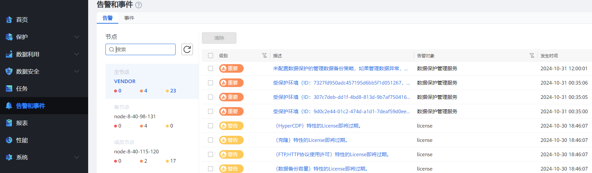

配置了集群高可用特性之后，副本支持存储在成员节点对应的备份存储单元上。也可以在主节点监控备节点/成员节点的状态，比如可以在主节点监控成员节点的告警、性能、任务，也可以按成员节点生成报表。
配置了集群高可用特性之后，在对资源进行备份时，可以在SLA中指定备份副本的目标位置。
在对备份副本进行复制时，支持“跨域”和“域内”两种复制模式。配置了集群高可用特性之后，对于域内复制，支持选择备份存储单元组，以实现复制副本目标位置的自动切换。
在“告警和事件”页面选择某个节点，查看对应的告警信息。

在“性能”页面选择某个节点，查看对应的性能信息。
在“任务”页面单击列表右上角的，勾选“节点”，查看主节点和成员节点的任务。
在“报表”页面创建全局报表或按成员节点创建报表。